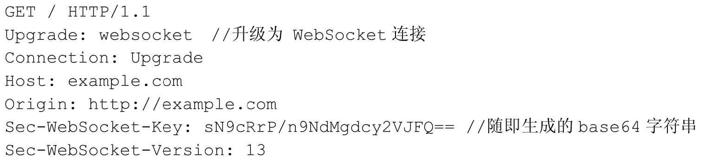
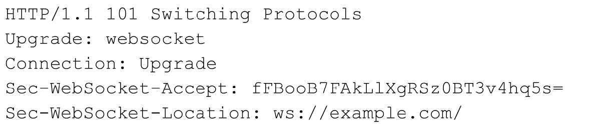

WebSocket
WebSocket可以看做是HTTP的升级版，它主要是为了弥补HTTP协议无法持久化和无状态而诞生的。
WebSocket提供了客户端和服务端之间全双工的通信机制。
保持通话
HTTP非持久化，当客户端发起 request 时，服务器会返回一个 response，那么HTTP连接就结束了，TCP也随之关闭，如果想要继续访问服务器就必须重新发起连接。
为了改进，HTTP1.1在请求头中增加了 Connection: Keep-Alive 字段，当服务器接受到这个字段后，会保持TCP连接不断开，同时，response 中也会增加这一字段，这样，客户端和服务器端就可以只建立一次连接而进行多次HTTP通信了。
这个属性已被加入到标准之中，除非指定 close ，为了避免无限制的长连接，服务器也会设置一个 timeout 属性，用来指定该长连接可以保持的最长时间。
Keep-Alive 解决了因为多次的TCP握手带来的性能损耗，但它没有从根本上解决实时通信的问题。
WebSocket的意义
WebSocket 就是为了解决实时通信的问题而生的。请求不再只由客户端发起，服务器端可以主动推送消息给客户端。
客户端发送 WebSocket 的请求头如下：

服务器端返回消息如下：

在请求头中，Connection 字段必须设置成 Upgrade，表示客户端希望升级连接。 Upgrade 字段设置成 WebSocket，表示希望升级到 WebSocket 协议。
Sec-WebSocket-Key 是一串随机字符串，服务器端会用这些数据构造出一个SHA-1的信息摘要。
Sec-WebSocket-Version 表示支持的 WebSocket 版本。
在Node中使用WebSocket
在Node中，由很多支持 WebSocket 的三方模块，其中 WS 就是其中之一。
// JavaScript 连接到WebSocket
var ws = new WebSocket('ws://localhost:3004');
ws.onopen = function() {
ws.send('Hello');
}
ws.onmessage = function(msg) {
console.log(msg.data);
}
// Node实现WebSocket
var WebSocketServer = require('ws').Server;
var wss = new WebSocketServer({ port: 3004 });
wss.on('connection', function(ws) {
ws.on('message', function(message) {
console.log('recevied: %s', message);
});
ws.send('I am a message sent from a ws server!');
})
在Node中，比较出名的 WebSocket 模块还有 Socket.IO，常被用来做在线聊天或推送服务等。